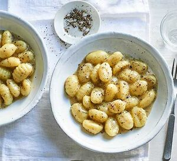

Gnocchi Cacio E Pepe

Description
Enjoy a comforting bowl of gnocchi with parmesan and black pepper. It's simple but utterly delicious - and the best part is, it only takes seven minutes to make.
Ingredients
- 300g gnocchi
- 2 tbsp unsalted butter
- 60g parmesan or vegetarian alternative, finely grated
- 2 tsp black pepper
- salad leaves, to serve (optional)
Steps
- Cook the gnocchi in a large pan of lightly salted, boiling water. Drain and reserve 200ml of the cooking water.
- Heat the butter in a large frying pan. Add the gnocchi, cheese and pepper as well as 150ml of the cooking water, raise the heat a little and stir vigorously until melted and the gnocchi is well coated. Pour in more of the reserved water if you like it saucier. Season with a little salt. Transfer the gnocchi to bowls and serve with a mixed salad, if you like.